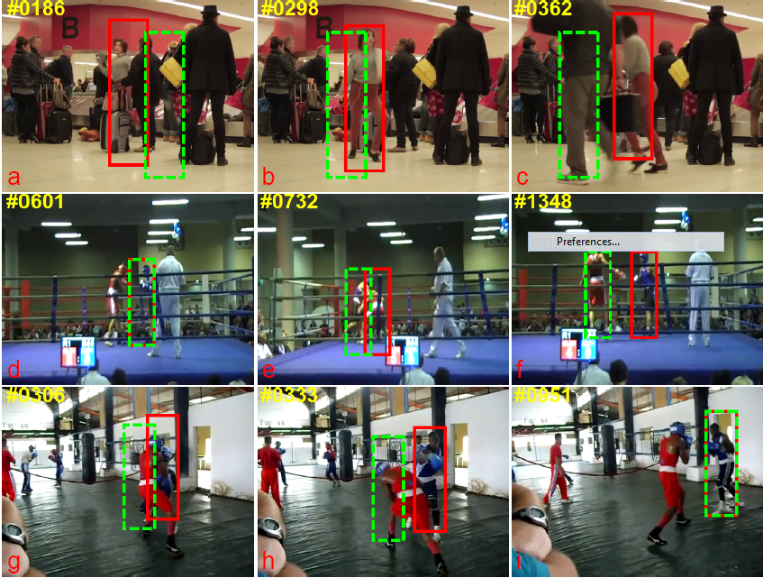

Shugao MaResearch Scientist [CV]Oculus Research, Facebook Email: shugao.ma -at- oculus.com |
Jianming Zhang, Shugao Ma, Mehrnoosh Sameki, Stan Sclaroff, Margrit Betke, Zhe Lin, Xiaohui Shen, Brian Price & Radomír Měch "Salient Object Subitizing". in International Journal of Computer Vision (IJCV), 2017. |
|
Shugao Ma , Jianming Zhang, Leonid Sigal, Nazli Ikizler-Cinbis and Stan Sclaroff. "Space-Time Tree Ensemble for Action Recognition". in International Journal of Computer Vision (IJCV), 2017. |
|
Shugao Ma , Sarah Adel Bargal, Jianming Zhang, Leonid Sigal and Stan Sclaroff. "Do Less and Achieve More: Training CNNs for Action Recognition Utilizing Action Images from the Web". Pattern Recognition, 2017. [arXiv][Datasets] |
|
Shugao Ma, Weiqiang Wang. "Effective Fighting Shot Discrimination in Action Movie ." Journal of Computer Science and Technology (JCST), Vol.26, No.1, pp.187-19, 2011. [PDF] |
Shugao Ma , Leonid Sigal and Stan Sclaroff. "Learning Activity Progression in LSTMs for Activity Detection and Early Detection". In conference on Computer Vision and Pattern Recognition (CVPR), 2016. [PDF] |
|
Shugao Ma , Leonid Sigal and Stan Sclaroff. "Space-Time Tree Ensemble for Action Recognition". In conference on Computer Vision and Pattern Recognition (CVPR), oral, 2015. [PDF] [Slides][Project] |
|
Jianming Zhang Shugao Ma , Mehrnoosh Sameki, Stan Sclaroff, Margrit Betke, Zhe Lin, Xiaohui Shen and Brian Price.. "Salient Object Subitizing". In conference on Computer Vision and Pattern Recognition (CVPR), 2015. [PDF] |
|
Svebor Karaman, Lorenzo Seidenari, Shugao Ma , Alberto Del Bimbo and Stan Sclaroff. "Adaptive Structured Pooling for Action Recognition". In British Machine Vision Conference (BMVC), 2014. [PDF] |
|
|  | Jianming Zhang, Shugao Ma , and Stan Sclaroff. "MEEM: Robust Tracking via Multiple Experts using Entropy Minimization". In European Conference on Computer Vision (ECCV), 2014. [PDF][Project] |
Shugao Ma, Jianming Zhang, Nazli Ikizler-Cinbis and Stan Sclaroff. "Action Recognition and Localization by Hierarchical Space-Time Segments". In IEEE International Conference on Computer Vision (ICCV), 2013. [PDF][Project] |
|
Shugao Ma, Nazli Ikizler-Cinbis and Stan Sclaroff "Unsupervised learning of discriminative relative visual attributes". In 2nd International Workshop on Parts and Attributes, held in conjunction with European Conference on Computer Vision (ECCV), 2012. [PDF][Slides][code] |
|
Shugao Ma, Weiqiang Wang. "Effective Camera Motion Analysis Approach". In IEEE International Conference on Networking, Sensing and Control (ICNSC), 2010. [PDF] |
|
Shugao Ma, Weiqiang Wang, Shuqiang Jiang, Qingming Huang, Wen Gao. "Effective Scene Matching with Local Feature Representatives". In International Conference on Pattern Recognition (ICPR), 2008 [PDF] |